세션 3에서 배운 YOLO 결함 탐지, 임계값 트레이드오프, 데이터 불균형 처리를 Generative AI로 확장합니다. 합성 이미지로 YOLO 학습 데이터를 보강하고, SSIM 품질 임계값과 Recall 개선 효과를 검증합니다.
| 이전 세션에서 배운 것 | 세션 4에서 이어지는 것 |
|---|---|
| YOLO 결함 탐지 (세션 3) | 합성 이미지로 YOLO 학습 데이터 보강 |
| 임계값 트레이드오프 (세션 3) | 합성 이미지 품질 임계값(SSIM)과 동일 맥락 |
| Recall 최우선 원칙 (세션 2) | 합성 데이터가 Recall 개선에 기여하는지 검증 |
| 데이터 불균형 처리 (세션 1) | 합성 데이터가 소수 클래스(결함) 보강에 미치는 효과 |
Diffusion Model — 노이즈에서 결함 이미지를 꺼내는 법
45분
참고 교재: Hands-On Generative AI with Transformers and Diffusion Models (Omar Sanseviero et al., O'Reilly)
소요 시간: 문제 제기 3분 + 이론 13분 + 시연 10분 + 실습 19분
1-1. 문제 제기 (3분)
상황: 제조 결함 탐지 모델을 학습시키려는데 데이터가 부족합니다.
[제조 현장의 데이터 현실]
정상 제품 이미지: ████████████████████ 수만 장 (쉽게 수집 가능)
스크래치 결함: ██ 수백 장
기포 결함: █ 수십 장
크랙 결함: ░ 수 장 ← 학습 불가 수준세션 1에서 SMOTE로 해결했지만, 이미지 데이터에 SMOTE를 적용하면 어떤 문제가 생길까요?
[이미지에 SMOTE를 적용하면]
결함 이미지 A: [픽셀값 배열]
결함 이미지 B: [픽셀값 배열]
두 이미지의 중간값: 흐릿하고 의미없는 혼합 이미지
&arr; 픽셀 보간은 의미 있는 새 결함을 만들지 못함
&arr; 필요한 것: "진짜처럼 보이는" 새 결함 이미지핵심 질문: 없는 결함 이미지를 진짜처럼 만들어낼 수 있을까?
&arr; 세션 1·2의 데이터 부족 문제를 데이터 생성으로 해결하는 접근
1-2. 이론 (13분)
STEP 01 Diffusion의 직관: 노이즈 추가 → 노이즈 제거 (5분)
Hands-On Generative AI Ch.4 Diffusion Models — Diffusion 모델의 Forward/Reverse Process 원리와 U-Net 기반 노이즈 예측 / Ch.2 Transformers — Diffusion의 조건부 생성에 활용되는 Transformer 아키텍처
Diffusion 모델이 배우는 것은 딱 하나입니다: "이 이미지에서 노이즈를 빼면 어떤 이미지가 나오는가"
[Forward Process: 노이즈 추가 (학습 데이터 생성)]
원본 결함 이미지 x₀
↓ 노이즈 조금 추가
x₁ (약간 흐려짐)
↓ 노이즈 추가
x₂ (더 흐려짐)
↓ ... (T번 반복)
x (완전한 노이즈)
&arr; 모델은 (x, t) 쌍을 보고 "얼마나 노이즈가 있는지" 학습
[Reverse Process: 노이즈 제거 (이미지 생성)]
순수 노이즈 x
↓ 노이즈 조금 제거 (모델 예측)
x₋₁
↓ 반복...
x₀ (새로운 결함 이미지 생성!)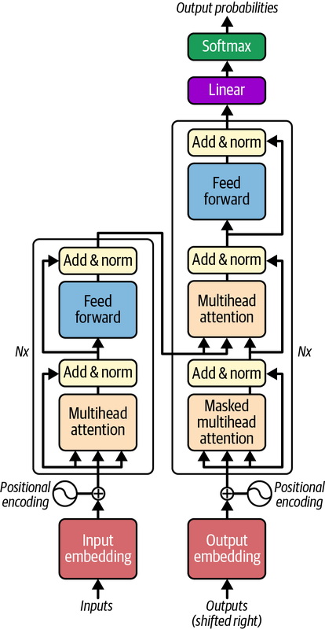
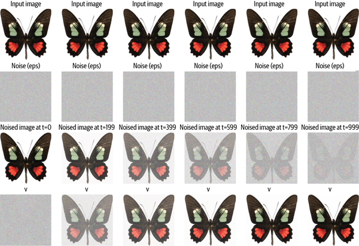
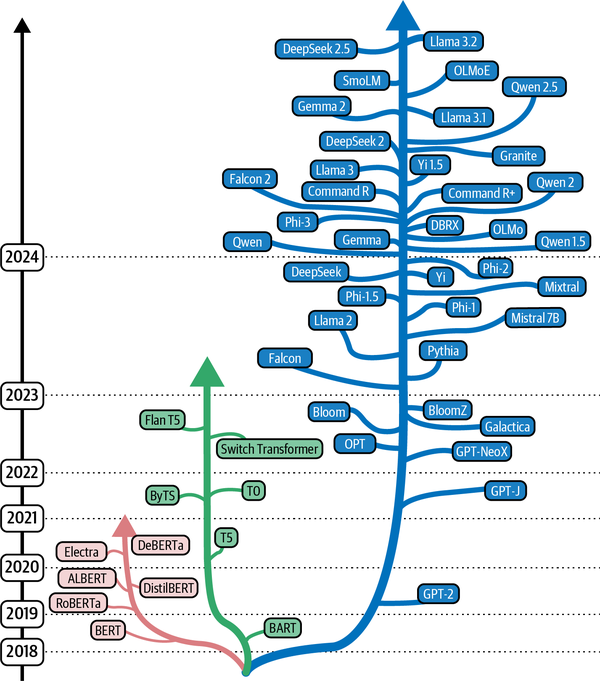
STEP 02 Fine-tuning 전략: 적은 데이터로 특정 스타일 학습 (5분)
Hands-On Generative AI Ch.7 Fine-Tuning Stable Diffusion — Fine-tuning의 원리와 LoRA / DreamBooth / Textual Inversion 전략 비교
Stable Diffusion 같은 대형 모델을 처음부터 학습하는 것은 불가능합니다.
Fine-tuning: 이미 학습된 모델을 우리 결함 이미지에 맞게 미세조정합니다.
| 방법 | 필요 이미지 수 | 학습 시간 | 파라미터 변경 |
|---|---|---|---|
| DreamBooth | 3~20장 | 수십 분 | 전체 모델 업데이트 |
| LoRA | 10~100장 | 수 분 | 일부 파라미터만 추가 |
| Textual Inversion | 5~10장 | 수 분 | 텍스트 임베딩만 학습 |
LoRA (Low-Rank Adaptation) 직관:
[원래 모델 가중치 W] [LoRA 추가]
거대한 행렬 (변경 안 함) + 작은 행렬 두 개의 곱 (ΔW = A × B)
학습하는 파라미터 수: 전체의 0.1~1% 수준
&arr; 결함 이미지 10장으로도 특정 결함 패턴 학습 가능
&arr; 학습 완료 후 원본 모델에 병합 가능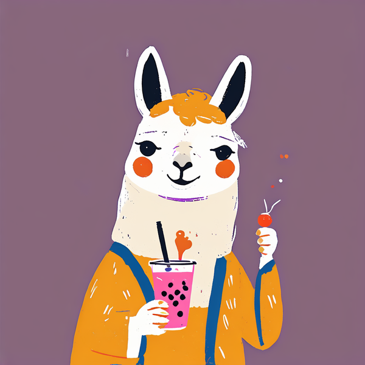
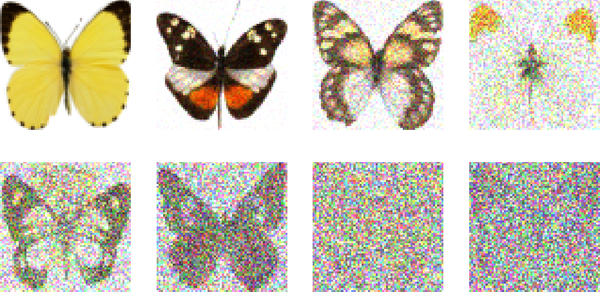
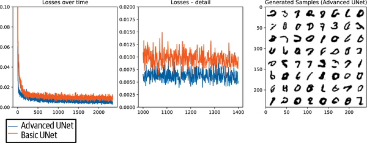
어떤 코드인지 한눈에 보기: Stable Diffusion 모델을 불러와서 미리 fine-tuning 해 둔 LoRA 가중치를 얹은 뒤, GPU로 옮기는 3단계 준비 코드입니다.
from diffusers import StableDiffusionPipeline
import torch
# 사전 fine-tuning된 결함 생성 모델 로드
pipeline = StableDiffusionPipeline.from_pretrained(
"runwayml/stable-diffusion-v1-5", # Hugging Face 모델
torch_dtype=torch.float16 # 반정밀도(메모리 절반)
)
# LoRA 가중치 로드 (fine-tuning 결과)
pipeline.load_lora_weights("./lora_defect_weights") # 학습해 둔 작은 가중치
pipeline = pipeline.to("cuda") # GPU로 이동이번 실습에서는 사전 준비된 가중치를 로드해서 생성 결과만 실험합니다.
STEP 03 생성 품질 평가: 무엇이 좋은 이미지인가 (3분)
Hands-On Generative AI Ch.4 Diffusion Models — Evaluation — 생성 이미지 품질 평가 지표(FID, SSIM 등)와 실무 활용
[생성 이미지 평가 지표 3가지]
① 육안 검사 (가장 기본)
&arr; 실제 결함처럼 보이는가?
&arr; 결함 위치·형태가 자연스러운가?
② SSIM (Structural Similarity Index)
&arr; 구조적 유사도: 0(완전 다름) ~ 1(완전 동일)
&arr; 생성 이미지와 실제 결함의 구조적 패턴 비교
&arr; 실무 기준: SSIM > 0.7이면 유사하다고 판단
③ FID (Fréchet Inception Distance)
&arr; 생성된 이미지 집합 전체의 분포와 실제 이미지 분포 사이의 거리
&arr; 낮을수록 좋음 (0에 가까울수록 실제와 유사)
&arr; 단점: 계산에 최소 수백 장의 이미지 필요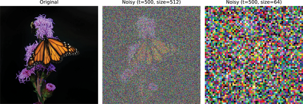
SSIM 계산 코드:
from skimage.metrics import structural_similarity as ssim
import numpy as np
def calculate_ssim(real_img, generated_img):
"""두 이미지의 SSIM 계산"""
real_gray = np.mean(real_img, axis=2) # (H, W, 3) → (H, W)
gen_gray = np.mean(generated_img, axis=2)
score = ssim(real_gray, gen_gray, data_range=1.0) # 0~1 정규화 가정
return score
# 사용 예시
score = calculate_ssim(real_defect, generated_defect)
print(f"SSIM: {score:.3f}") # 0.7 이상이면 품질 양호1-3. Claude Code 시연 (10분)
Stable Diffusion으로 제조 결함 이미지를 생성하고 품질을 평가해줘.
- diffusers 라이브러리로 파이프라인 구성
- 결함 유형 3가지 프롬프트:
"scratch defect on metal surface, industrial quality inspection"
"bubble defect on painted surface, factory inspection photo"
"crack defect on ceramic component, quality control"
- num_inference_steps=50으로 각 유형당 3장 생성
- 결과: 3×3 grid 시각화
- 생성 이미지와 합성 실제 결함 이미지의 SSIM 계산
- GPU 없을 때를 위해 CPU fallback 처리 포함시연 흐름:
- 사전 준비된 파이프라인 로드
- 결함 유형별 이미지 생성 (3가지)
- 생성 결과 grid 시각화
- SSIM으로 실제 결함 이미지와 유사도 계산
- Claude에게 추가 질문: "생성된 이미지가 너무 비슷하게만 나오는 문제(mode collapse)는 왜 생기고, 어떻게 해결해?"
1-4. 실습 (19분)
과제
num_inference_steps를 바꿔가며 생성 속도와 이미지 품질의 트레이드오프를 분석하세요.
| 실험 | num_inference_steps | 생성 시간(초) | SSIM | 관찰 포인트 |
|---|---|---|---|---|
| A | 20 | 측정 | 측정 | 빠르지만 품질은? |
| B | 50 | 측정 | 측정 | 기본값 |
| C | 100 | 측정 | 측정 | 느리지만 더 좋은가? |
제출 항목: 3가지 steps 설정의 생성 이미지 비교 (각 설정당 1장씩, subplot), 생성 시간 + SSIM 비교 표, 실시간 생성 환경에서의 steps 선택 근거 (한 문단)
실습 시작 코드
import torch
import numpy as np
import time
import matplotlib.pyplot as plt
from diffusers import StableDiffusionPipeline
from skimage.metrics import structural_similarity as ssim
# GPU 없는 환경을 위한 설정
device = "cuda" if torch.cuda.is_available() else "cpu"
dtype = torch.float16 if device == "cuda" else torch.float32
# 파이프라인 로드
try:
pipe = StableDiffusionPipeline.from_pretrained(
"hf-internal-testing/tiny-stable-diffusion-pipe",
torch_dtype=dtype
).to(device)
except Exception as e:
print(f"모델 로드 실패: {e}")
pipe = None
prompt = "scratch defect on metal surface, industrial inspection photo"
results = {}
for steps in [20, 50, 100]:
if pipe is not None:
start = time.time()
image = pipe(prompt, num_inference_steps=steps).images[0]
elapsed = time.time() - start
img_array = np.array(image) / 255.0
else:
elapsed = steps * 0.01
img_array = np.random.rand(512, 512, 3)
real_defect = np.random.rand(512, 512, 3)
real_gray = np.mean(real_defect, axis=2)
gen_gray = np.mean(img_array, axis=2)
ssim_score = ssim(real_gray, gen_gray, data_range=1.0)
results[steps] = {'image': img_array, 'time': elapsed, 'ssim': ssim_score}
print(f"steps={steps}: {elapsed:.1f}초, SSIM={ssim_score:.3f}")
# TODO: 결과 비교 시각화 (subplot 3개 + 비교 표)Defect Generation — 프롬프트로 결함을 설계한다
45분
참고 교재: Generative Deep Learning, 2nd Ed. (David Foster, O'Reilly)
소요 시간: 문제 제기 3분 + 이론 13분 + 시연 10분 + 실습 19분
2-1. 문제 제기 (3분)
섹션 1에서 배운 것: Diffusion으로 결함 이미지를 생성할 수 있음
이번 섹션의 질문: 원하는 결함을 정확하게 제어할 수 있을까?
[제어의 필요성]
섹션 1: "스크래치 결함 이미지" → 랜덤한 스크래치 생성
어디에? 얼마나 깊게? 어떤 방향으로? → 제어 불가
섹션 2: "금속 표면 왼쪽 모서리에 5mm 깊이의 수직 스크래치, 고강도"
→ 원하는 조건을 텍스트로 지정[현장에서 왜 이것이 중요한가]
필요한 것: 스크래치 길이 1~10mm 범위의 균일한 분포
현실: 현장에서 발생하는 스크래치는 랜덤 → 특정 크기만 부족
해결책: 부족한 조건의 결함을 프롬프트로 명세화해서 정확히 생성2-2. 이론 (13분)
STEP 01 조건부 생성의 직관: CGAN에서 Diffusion으로 (4분)
Generative Deep Learning Ch.4 Generative Adversarial Networks — CGAN의 조건부 생성 원리 / Ch.13 Multimodal Models — 텍스트-이미지 멀티모달 생성 모델
조건부 생성이라는 아이디어는 GAN 시대부터 있었습니다.
[조건부 생성의 발전]
CGAN (Conditional GAN, 2014):
조건 c (클래스 레이블) → Generator → 조건에 맞는 이미지
예: c = "스크래치" → 스크래치 이미지 생성
한계: 클래스 레이블만 가능, 세밀한 제어 불가
Text-to-Image Diffusion (2022~):
조건 c (텍스트 문장) → Diffusion → 텍스트에 맞는 이미지
예: "왼쪽에 깊은 스크래치가 있는 금속 표면" → 정확한 이미지
강점: 언어의 유연성으로 무한한 조건 표현 가능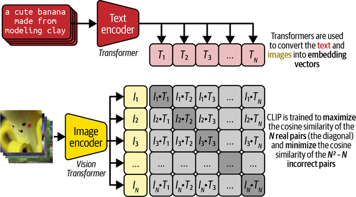
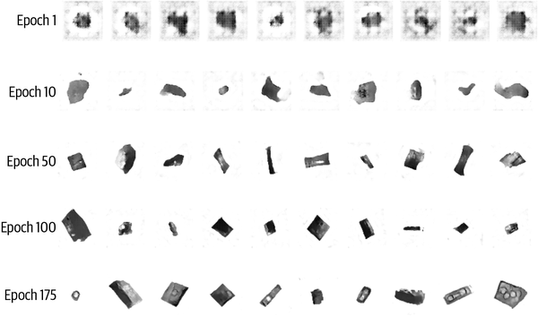
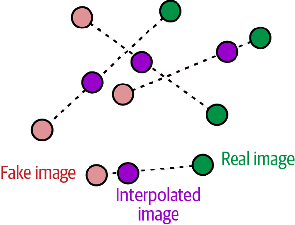
STEP 02 CLIP: 텍스트와 이미지를 연결하는 다리 (5분)
Generative Deep Learning Ch.13 Multimodal Models — CLIP의 대조 학습 원리와 텍스트-이미지 공간 연결
Stable Diffusion이 텍스트 프롬프트를 이해할 수 있는 이유는 CLIP 덕분입니다.
[CLIP의 학습 원리]
인터넷에서 수억 개의 (이미지, 텍스트 설명) 쌍으로 학습:
"a scratch on metal" ↔ [스크래치 이미지]
"a bubble defect" ↔ [기포 이미지]
"a crack on ceramic" ↔ [크랙 이미지]
결과: 텍스트와 이미지를 같은 벡터 공간에서 표현
비슷한 의미 = 가까운 벡터 위치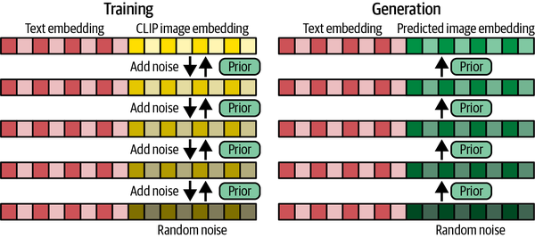
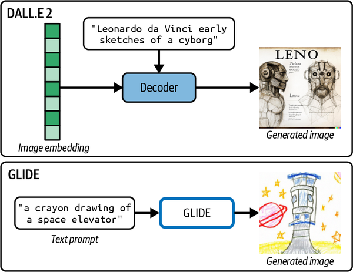
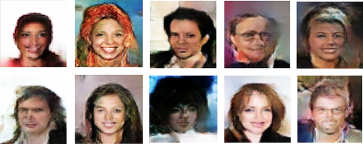
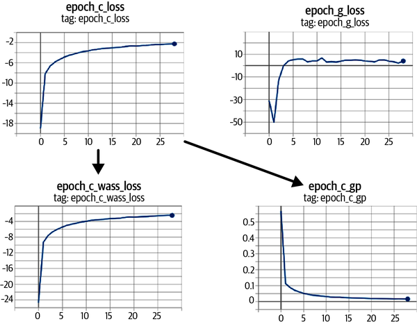
CLIP 임베딩 확인 코드:
from transformers import CLIPTextModel, CLIPTokenizer
tokenizer = CLIPTokenizer.from_pretrained("openai/clip-vit-base-patch32")
text_encoder = CLIPTextModel.from_pretrained("openai/clip-vit-base-patch32")
prompts = [
"scratch defect on metal surface",
"deep crack on ceramic material",
"bubble defect on painted surface"
]
for prompt in prompts:
inputs = tokenizer(prompt, return_tensors="pt")
embeddings = text_encoder(**inputs).last_hidden_state
print(f"'{prompt[:30]}...' → shape: {embeddings.shape}")
# shape: [1, 토큰 수, 512] → 이 벡터가 Diffusion의 조건이 됨STEP 03 제조 결함 프롬프트 설계 원칙 (4분)
Generative Deep Learning Ch.13 Multimodal Models — 효과적인 텍스트 프롬프트 설계와 네거티브 프롬프트 활용
[결함 프롬프트 설계 공식]
[결함 유형] + [위치] + [심각도] + [소재/배경] + [촬영 스타일]
예시:
"a deep vertical scratch defect on the left edge of a stainless steel surface,
industrial quality inspection photo, high resolution, studio lighting"
분해:
결함 유형: "deep vertical scratch defect"
위치: "on the left edge"
소재: "stainless steel surface"
촬영 스타일: "industrial quality inspection photo, high resolution"| 나쁜 프롬프트 | 좋은 프롬프트 |
|---|---|
"defect"너무 모호 |
"hairline crack defect, 2cm length, diagonal orientation, on white ceramic surface, macro photography" |
"very very bad defect extremely damaged"강조 반복은 효과 없음 |
"severe deep crack defect, multiple branching lines"구체적 묘사 |
네거티브 프롬프트: 원하지 않는 요소를 제거합니다.
# 네거티브 프롬프트: 생성에서 제외할 요소 지정
positive_prompt = "scratch defect on metal surface, inspection photo"
negative_prompt = "blurry, low quality, cartoon, illustration, text, watermark"
image = pipeline(
prompt=positive_prompt,
negative_prompt=negative_prompt,
num_inference_steps=50,
guidance_scale=7.5 # 프롬프트 충실도
).images[0]2-3. Claude Code 시연 (10분)
제조 결함 유형별 프롬프트 템플릿을 설계하고 이미지를 생성해줘.
결함 유형별 프롬프트 (각각 3가지 강도):
1. 스크래치: 경미 / 중간 / 심각
2. 기포: 소형 / 중형 / 대형
3. 크랙: 표면 / 깊은 / 관통
- diffusers 파이프라인으로 각 프롬프트 생성
- 결과: 3×3 grid (행=결함유형, 열=심각도)
- guidance_scale=7.5 고정
- guidance_scale을 3 / 7.5 / 15로 바꾼 비교도 추가시연 후 Claude에게 추가 질문:
"같은 프롬프트인데 결과가 매번 다른 이유는 뭐야? 재현 가능한 결과를 원한다면 어떻게 해야 해?"
시연 흐름:
- Claude와 함께 결함 프롬프트 템플릿 설계
- 유형별 × 강도별 이미지 생성
- 3×3 grid 시각화
guidance_scale변화 효과 확인- seed 고정으로 재현성 확보 방법 시연
2-4. 실습 (19분)
과제
guidance_scale을 바꿔가며 프롬프트 충실도와 이미지 다양성의 트레이드오프를 분석하세요.
| 실험 | guidance_scale | 특성 | 관찰 포인트 |
|---|---|---|---|
| A | 3 | 프롬프트 약하게 반영 | 다양하지만 프롬프트와 다를 수 있음 |
| B | 7.5 | 기본값 (권장) | 균형 |
| C | 12 | 프롬프트 강하게 반영 | 충실하지만 부자연스러울 수 있음 |
| D | 20 | 과도하게 반영 | 과포화, 아티팩트 발생 |
제출 항목: 4가지 guidance_scale의 생성 이미지 비교 (동일 seed, subplot), 결함 데이터 생성 목적에서의 guidance_scale 선택 근거 (한 문단)
실습 시작 코드
import torch
import numpy as np
import matplotlib.pyplot as plt
from diffusers import StableDiffusionPipeline
device = "cuda" if torch.cuda.is_available() else "cpu"
try:
pipe = StableDiffusionPipeline.from_pretrained(
"hf-internal-testing/tiny-stable-diffusion-pipe",
torch_dtype=torch.float16 if device == "cuda" else torch.float32
).to(device)
use_pipe = True
except:
use_pipe = False
print("파이프라인 없음: 합성 이미지로 대체")
prompt = ("scratch defect on stainless steel surface, "
"industrial quality inspection photo, high resolution")
negative_prompt = "blurry, low quality, cartoon, text, watermark"
SEED = 42
guidance_scales = [3, 7.5, 12, 20]
generated_images = {}
for gs in guidance_scales:
if use_pipe:
generator = torch.Generator(device=device).manual_seed(SEED)
image = pipe(
prompt=prompt,
negative_prompt=negative_prompt,
guidance_scale=gs,
generator=generator,
num_inference_steps=30
).images[0]
generated_images[gs] = np.array(image)
else:
np.random.seed(SEED)
generated_images[gs] = (np.random.rand(512, 512, 3) * 255).astype(np.uint8)
fig, axes = plt.subplots(1, 4, figsize=(16, 4))
for idx, gs in enumerate(guidance_scales):
axes[idx].imshow(generated_images[gs])
axes[idx].set_title(f'guidance_scale={gs}')
axes[idx].axis('off')
plt.suptitle('Guidance Scale 비교: 동일 프롬프트, 동일 Seed')
plt.tight_layout()
plt.show()합성 데이터 고도화 — 만든 데이터가 실제로 도움이 되는가
50분
참고 교재: Practical Synthetic Data Generation (Khaled El Emam et al., O'Reilly)
소요 시간: 핵심 개념+실험 설계 10분 + Claude Code 시연 15분 + 자유 실습 25분
3-1. 핵심 개념 + 실험 설계 (10분)
합성 데이터의 기회와 위험
Practical Synthetic Data Generation Ch.1 Introducing Synthetic Data Generation — 합성 데이터의 활용 사례, 기회, 그리고 실패 사례
[합성 데이터가 효과적인 경우]
✅ 소수 클래스(결함) 보강 → Recall 향상
✅ 결함 유형 다양성 확보 → 일반화 성능 향상
✅ 레이블링 비용 절감 → 대규모 학습 가능
[합성 데이터가 오히려 해로운 경우]
❌ 생성 품질이 낮을 때 → 노이즈 주입 효과
❌ 합성 비율이 너무 높을 때 → 실제 분포에서 멀어짐
❌ 도메인 불일치 → 생성 이미지와 실제 이미지의 색상·텍스처 차이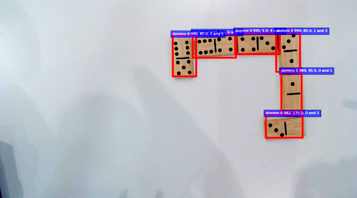

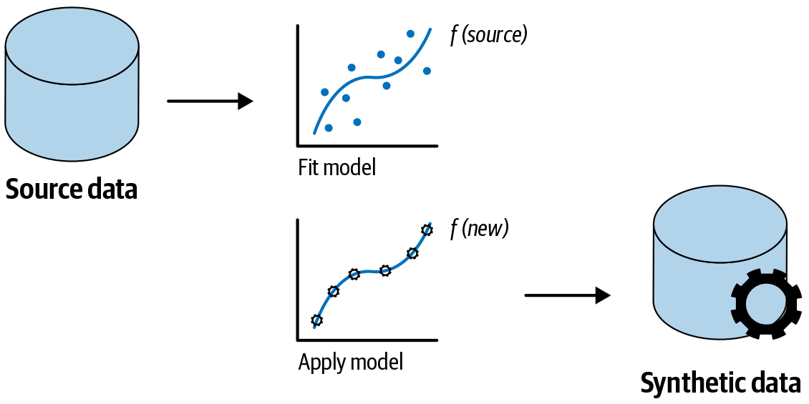
[실패 시나리오 예시]
합성 스크래치: 완벽하게 직선, 균일한 깊이
실제 스크래치: 불규칙한 방향, 깊이 변화
&arr; 합성으로만 학습하면 실제 스크래치를 탐지 못할 수 있음
&arr; 결론: "얼마나" 섞을 것인가가 핵심 질문실험 설계: 무엇을 비교할 것인가
Practical Synthetic Data Generation Ch.4 Evaluating Synthetic Data Utility — 합성 데이터 품질 측정과 실제 데이터 유사도 평가
[실험 구성]
데이터셋 구성:
실제 결함 이미지: 50장 (현실적인 소량 데이터 가정)
합성 결함 이미지: 200장 (섹션 1·2에서 생성)
테스트셋: 실제 이미지 20장 (절대 학습에 사용 안 함)
비교 모델:
기준 모델 (Baseline): 실제 50장만 학습
실험 모델 A: 실제 50장 + 합성 50장 (1:1)
실험 모델 B: 실제 50장 + 합성 150장 (1:3)
실험 모델 C: 합성 200장만 학습 (극단적 케이스)
평가 지표:
F1-Score: 전체 균형 성능
Recall: 결함을 놓치지 않는 능력 (가장 중요)
Precision: 오탐 비율3-2. Claude Code 시연 (15분)
합성 데이터 추가 효과를 비교하는 실험 코드를 만들어줘.
실험 설정:
- 실제 결함 이미지: 50장 (합성 numpy로 생성)
- 합성 결함 이미지: 200장 (품질이 약간 낮은 버전으로 시뮬레이션)
- 분류 모델: ResNet18 (fine-tuning)
- 4가지 데이터 구성: 실제만 / 1:1 / 1:3 / 합성만
결과 시각화:
1. 4가지 모델의 Confusion Matrix (2×2 subplot)
2. F1 / Recall / Precision 비교 막대그래프
3. 합성 데이터 비율 vs 각 지표 꺾은선 그래프
GPU 없는 환경에서도 실행 가능하게 (간단한 CNN으로 대체 가능)시연 후 Claude에게 결과 해석 요청:
"합성 데이터를 추가했더니 Recall은 올라갔는데 Precision이 내려갔어. 왜 이런 일이 생기는지 설명해줘. 그리고 이 상황에서 어떤 지표를 더 믿어야 할까?"
시연 흐름:
- 4가지 데이터셋 구성
- 각 구성으로 모델 학습
- Confusion Matrix 시각화
- 지표 비교 그래프 출력
- Claude와 결과 해석 대화
3-3. 자유 실습 (25분)
기본 — 합성 데이터 비율 실험
목표: 합성 데이터 비율 변화가 F1-Score에 미치는 영향 확인
합성 데이터 비율: 0% / 25% / 50% / 75% / 100%
각 비율로 모델 학습 → F1-Score, Recall, Precision 기록
제출:
- 비율별 성능 표
- "어떤 비율에서 최적 성능이 나왔는가?" 한 문단중급 — 합성 이미지 품질 필터링 효과
목표: SSIM 임계값으로 품질 낮은 합성 이미지를 걸러내면 성능이 개선되는지 확인
실험:
① 합성 이미지 전체 사용 → 성능 기록
② SSIM > 0.5인 이미지만 사용 → 성능 기록
③ SSIM > 0.7인 이미지만 사용 → 성능 기록
제출:
- SSIM 임계값별 사용 이미지 수 + 성능 표
- "품질 필터링이 실제로 효과가 있었는가?" 한 문단
- Claude에게 질문: "FID와 SSIM 중 어떤 지표가 학습 성능을 더 잘 예측하는가?"심화 — 결함 유형별 합성 효과 차이 분석
목표: 어떤 결함 유형에서 합성 데이터가 더 효과적인지 파악
실험:
① 스크래치 결함: 실제만 vs 실제 + 합성 → 유형별 Recall 비교
② 기포 결함: 동일 실험
③ 크랙 결함: 동일 실험
분석 질문:
"생성 품질(SSIM)이 높은 결함 유형에서 학습 효과도 더 좋은가?"
→ SSIM과 Recall 개선폭의 상관관계를 산점도로 시각화
제출:
- 결함 유형별 SSIM(생성 품질) + Recall 개선폭 산점도
- 상관관계 해석 한 문단심화 학습 자료
강의에서 시간 관계상 다루지 못한 심화 내용입니다. 강의 후 궁금증이 생겼을 때 아래 순서로 탐색하시길 권장합니다.
섹션 1 심화: Diffusion 구조와 Fine-tuning 심화
Hands-On Generative AI with Transformers and Diffusion Models (Omar Sanseviero et al., O'Reilly)
심화 챕터 로드맵: Ch.3 (AE/VAE/CLIP) → Ch.4 (Diffusion 원리) → Ch.7 (Fine-Tuning) → Ch.8 (ControlNet)
Diffusion의 수학적 원리
[Forward Process: 노이즈 추가 공식]
q(x | x₋₁) = N(x; √(1-β)x₋₁, βI)
β: 노이즈 스케줄 (시간 t에 따라 증가)
t=0: 원본 이미지
t=T: 완전한 가우시안 노이즈
[Reverse Process: 모델이 학습하는 것]
p_θ(x₋₁ | x) = N(x₋₁; μ_θ(x,t), Σ_θ(x,t))
&arr; 모델(θ)이 노이즈를 예측하고 제거하는 방향을 학습DDIM: 더 빠른 샘플링
from diffusers import DDIMScheduler
# DDPM: 1000 steps 필요
# DDIM: 50 steps로도 유사한 품질
scheduler = DDIMScheduler.from_pretrained(
"runwayml/stable-diffusion-v1-5",
subfolder="scheduler"
)
pipe = StableDiffusionPipeline.from_pretrained(
"runwayml/stable-diffusion-v1-5",
scheduler=scheduler
)
image = pipe(prompt, num_inference_steps=50).images[0]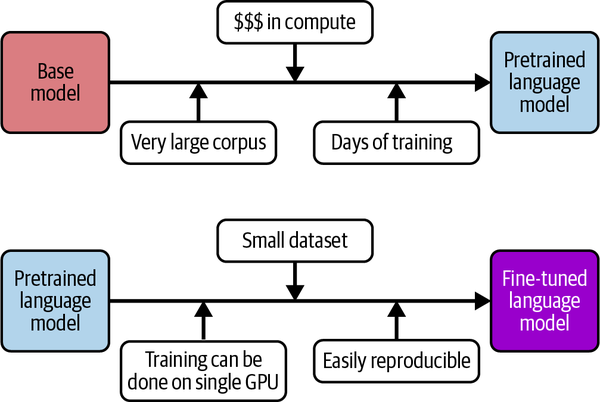
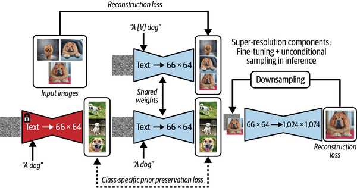
Fine-tuning 전략 비교 심화
| 방법 | 필요 데이터 | 학습 시간 | GPU 메모리 | 결과 품질 | 추천 상황 |
|---|---|---|---|---|---|
| DreamBooth | 3~20장 | 30~60분 | 24GB+ | 최고 | 특정 물체 스타일 |
| LoRA | 10~100장 | 10~30분 | 8GB+ | 높음 | 일반 결함 패턴 |
| Textual Inversion | 5~10장 | 1~2시간 | 8GB+ | 중간 | 텍스트 제어 중심 |
| Full Fine-tuning | 1000장+ | 수 시간 | 40GB+ | 최고 | 충분한 자원 있을 때 |
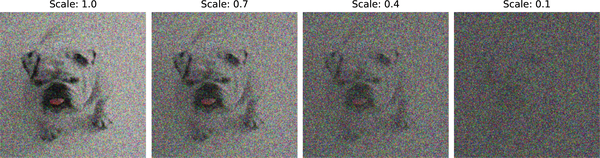
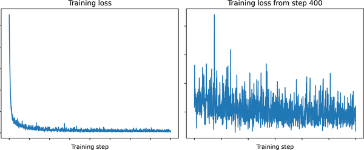
섹션 2 심화: 고급 프롬프트 제어와 CGAN
Generative Deep Learning, 2nd Ed. (David Foster, O'Reilly)
심화 챕터 로드맵: Ch.4 (CGAN 조건부 생성 원리) → Ch.13 (CLIP, 멀티모달 모델)
ControlNet: 이미지 구조까지 제어
from diffusers import StableDiffusionControlNetPipeline, ControlNetModel
import cv2
import numpy as np
# ControlNet: 엣지 맵/포즈/깊이 등을 조건으로 추가 제어
controlnet = ControlNetModel.from_pretrained(
"lllyasviel/sd-controlnet-canny" # 엣지 기반 제어
)
pipe = StableDiffusionControlNetPipeline.from_pretrained(
"runwayml/stable-diffusion-v1-5",
controlnet=controlnet
)
# 결함 위치를 엣지 맵으로 지정
reference_image = cv2.imread("defect_reference.jpg")
edges = cv2.Canny(reference_image, 100, 200)
image = pipe(
prompt="scratch defect on metal surface",
image=edges,
controlnet_conditioning_scale=0.8
).images[0]Prompt Engineering 고급 기법
# 1. 프롬프트 가중치: 특정 단어 강조
prompt = "a (deep:1.5) scratch defect on (stainless steel:1.3) surface"
# (단어:가중치): 1.0 기본, 1.5는 50% 강조, 0.5는 약화
# 2. 프롬프트 혼합 (Prompt Blending)
# 두 프롬프트를 0.5:0.5로 혼합하면 두 결함 특성이 혼합된 이미지
# 3. 구조화된 프롬프트 템플릿
def build_defect_prompt(defect_type: str, severity: str,
location: str, material: str) -> str:
return (
f"{severity} {defect_type} defect "
f"located at {location} "
f"on {material} surface, "
f"industrial quality inspection photograph, "
f"high resolution macro photography, sharp focus, "
f"neutral background"
)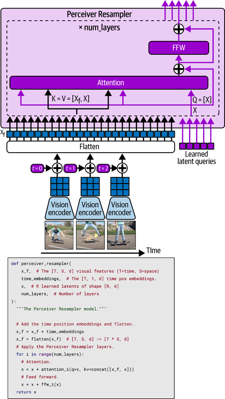

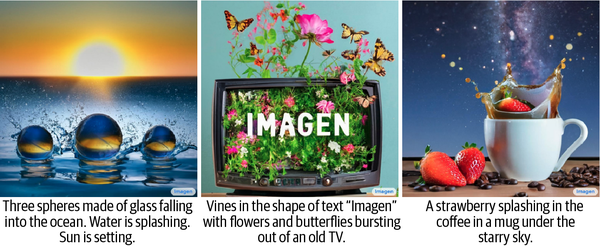
섹션 3 심화: 합성 데이터 품질 측정
Practical Synthetic Data Generation (Khaled El Emam et al., O'Reilly)
심화 챕터 로드맵: Ch.1 (합성 데이터 사례와 위험) → Ch.4 (FID, SSIM 품질 측정)
FID (Fréchet Inception Distance) 계산
import torch
import numpy as np
from torchvision.models import inception_v3
from scipy.linalg import sqrtm
def calculate_fid(real_images, fake_images, batch_size=32):
"""
FID = ||μ_r - μ_f||² + Tr(Σ_r + Σ_f - 2(Σ_r Σ_f)^(1/2))
낮을수록 좋음 (0 = 완벽하게 동일한 분포)
"""
model = inception_v3(pretrained=True, transform_input=False)
model.fc = torch.nn.Identity()
model.eval()
def get_features(images):
features = []
for i in range(0, len(images), batch_size):
batch = torch.tensor(images[i:i+batch_size]).float()
with torch.no_grad():
feat = model(batch)
features.append(feat.numpy())
return np.concatenate(features, axis=0)
real_feat = get_features(real_images)
fake_feat = get_features(fake_images)
mu_r, sigma_r = real_feat.mean(0), np.cov(real_feat, rowvar=False)
mu_f, sigma_f = fake_feat.mean(0), np.cov(fake_feat, rowvar=False)
diff = mu_r - mu_f
covmean = sqrtm(sigma_r @ sigma_f)
fid = diff @ diff + np.trace(sigma_r + sigma_f - 2 * covmean.real)
return fid
# FID 해석 기준
# FID < 10: 매우 좋음 (실제와 거의 구분 불가)
# FID < 50: 양호
# FID > 100: 개선 필요합성 데이터 활용 전략 비교
| 전략 | 방법 | 효과 | 주의사항 |
|---|---|---|---|
| 순수 보강 | 합성 이미지를 실제에 추가 | Recall 향상 | 비율 조절 필요 |
| 품질 필터링 | SSIM > 임계값인 것만 사용 | 노이즈 감소 | 임계값 튜닝 필요 |
| 도메인 적응 | 합성 스타일을 실제에 맞게 조정 | 도메인 갭 감소 | 추가 처리 필요 |
| 혼합 학습 | 배치마다 실제:합성 비율 유지 | 안정적 학습 | 비율 최적화 필요 |
추천 학습 경로
Diffusion 모델 심화 (2주) — Hands-On Generative AI
| 순서 | 챕터 | 핵심 내용 | 이유 |
|---|---|---|---|
| 1 | Ch.3 | Compressing and Representing Information (AE/VAE/CLIP) | 잠재 공간 표현 학습 기초 |
| 2 | Ch.4 | Diffusion Models — Forward/Reverse Process, U-Net, 평가 | 수학적 원리와 모델 내부 이해 |
| 3 | Ch.7 | Fine-Tuning Stable Diffusion — LoRA, DreamBooth | 실무 fine-tuning 능력 |
조건부 생성 심화 (1주) — Generative Deep Learning, 2nd Ed.
| 순서 | 챕터 | 핵심 내용 | 이유 |
|---|---|---|---|
| 1 | Ch.4 | CGAN, 조건부 생성 원리 | 조건부 생성의 뿌리 |
| 2 | Ch.13 | CLIP, 멀티모달 모델 | 텍스트-이미지 연결 원리 |
합성 데이터 심화 (1주) — Practical Synthetic Data Generation
| 순서 | 챕터 | 핵심 내용 | 이유 |
|---|---|---|---|
| 1 | Ch.1 | Introducing Synthetic Data Generation | 전략적 판단 능력 |
| 2 | Ch.4 | Evaluating Synthetic Data Utility | 데이터 품질 평가 |
실무 적용 프로젝트 아이디어
- MVTec AD Dataset: 실제 산업 결함 데이터셋으로 Diffusion Fine-tuning 실습
- ControlNet + 결함 엣지맵: 결함 위치와 형태를 엣지로 지정해서 정밀 생성
- 합성 데이터 파이프라인 자동화: 결함 유형·강도·위치 파라미터를 받아 대량 생성하는 스크립트
- 세션 3 YOLO와 연결: 합성 결함 이미지로 YOLO 파인튜닝 → mAP 개선 측정
출처
- 섹션 1: Hands-On Generative AI with Transformers and Diffusion Models (Omar Sanseviero et al., O'Reilly)
- 섹션 2: Generative Deep Learning, 2nd Ed. (David Foster, O'Reilly)
- 섹션 3: Practical Synthetic Data Generation (Khaled El Emam et al., O'Reilly)